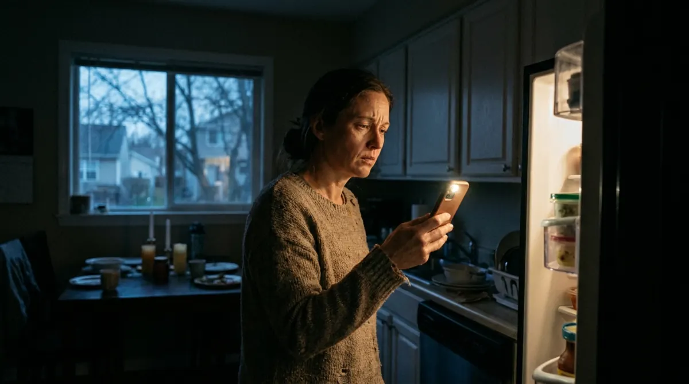
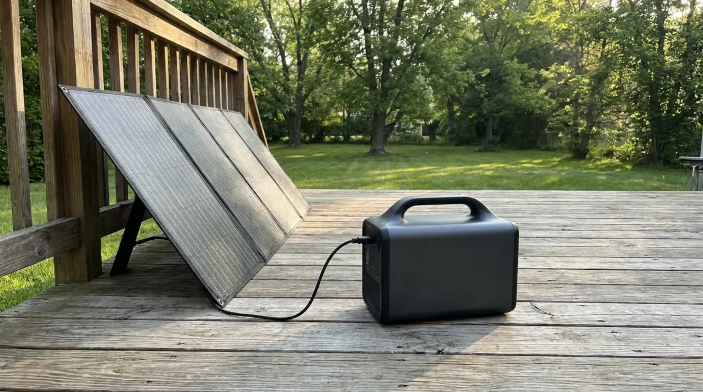
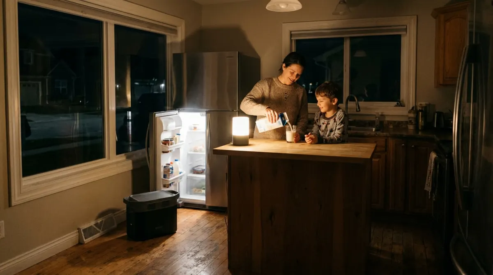

Research picked 3 of 5 angles. 3 bridge pages, ad copy ready to paste. Built and deployed with Claude Code.
/make-video solar-generator./legal solar-generator./swap-logo solar-generator <name>.Dark kitchen, dying phones, the fridge on a timer: almost everyone has an outage story.
"Still counting on a gas generator?" opens a loop the click closes.
"Keep the fridge, lights and Wi-Fi on" is a result people picture instantly.
Skipped: real but closer ad review on TikTok and Meta; Pain covers the moment.
Skipped: no reviews or numbers from the offer owner to point to.

The dark kitchen and dying phones of an outage, then a quiet solar backup instead of the gas generator.
https://gilliesjarell-commits.github.io/Landers/solar-generator/pain.html

"Still counting on a gas generator?" Four quick questions, then the quiet alternative.
https://gilliesjarell-commits.github.io/Landers/solar-generator/curiosity.html

Keep the fridge, lights and Wi-Fi on: pick what you would keep running, then see the option.
https://gilliesjarell-commits.github.io/Landers/solar-generator/benefit.htmlGenerated by the Campaign Agent · Claude Code